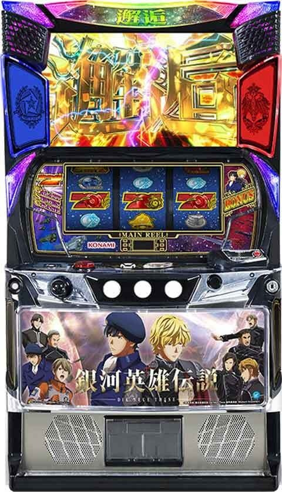
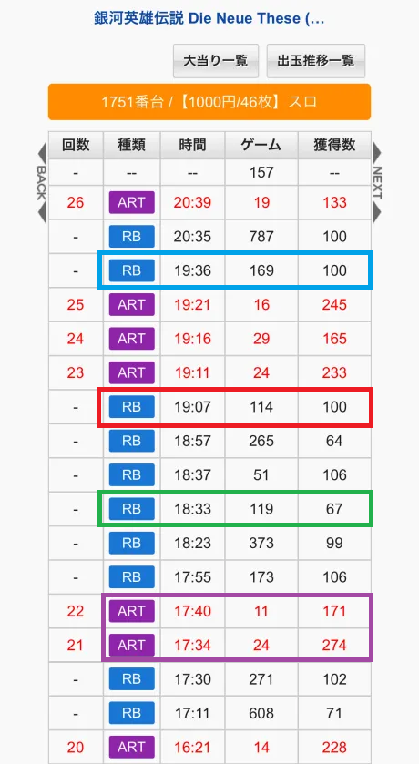
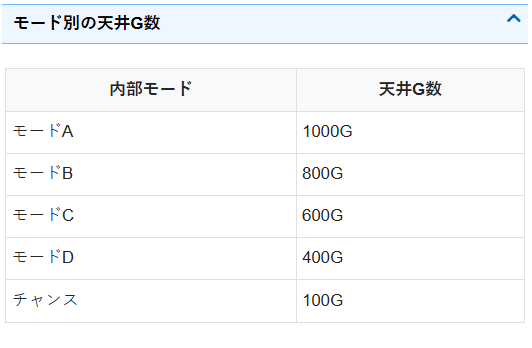
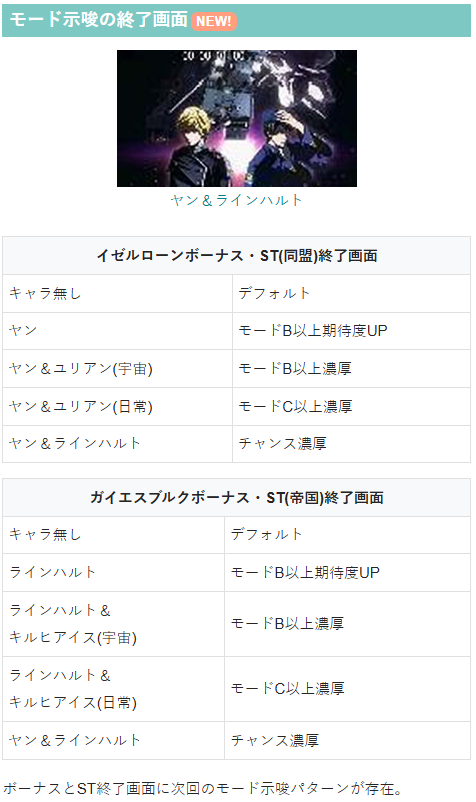
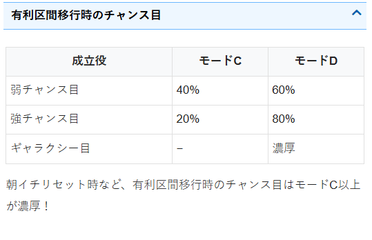
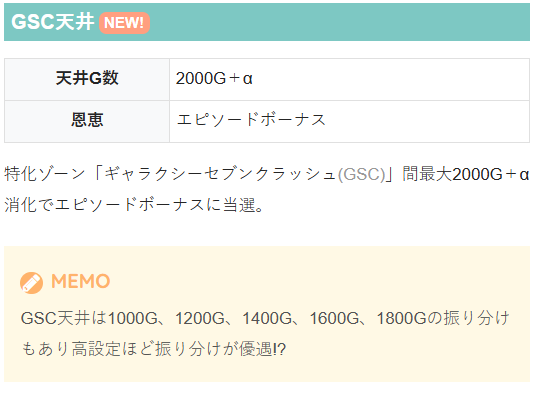

銀河英雄伝説 Die Neue These

【天井情報】
1000G＋α消化でST濃厚のオープニングボーナスに当選。
設定変更時は天井が最大800G+αに短縮。
RB(イゼルローンボーナス/ガイエスブルクボーナス)でST非突入時は消化ゲーム数を引き継ぐ。
特化ゾーン「ギャラクシーセブンクラッシュ(GSC)」間最大2000G＋α消化でエピソードボーナスに当選。
英雄ポイントは最大500ptでCZ濃厚。
【リセット判別】
不明
コナミなのでガックン判別有効？
【有利区間について】
不明
筐体の十字キーを押せば液晶画面確認可能。左下がST間G数、右下が英雄ポイント。
狙い目
【リセット狙い】
ST間 180Gから
※天井狙い時は液晶左下のG数を要確認。
【ST間天井狙い】
600Gから
※天井狙い時は液晶左下のG数を要確認。
※データ機上、STのG数がカウントされない。
【GSC間天井狙い】
1200Gから
※ST中のボーナス無し＝GSC未当選
※ST当選しても駆け抜けが続いていればGSC間はハマっていると判断出来そう
※GSC間天井情報の2000+αのαが前兆分なのか、2000超えてからのボーナスで発動するのか不明
【英雄ポイント狙い】
400ptから
100pt毎のゾーン 下二桁90ptから？
【銀河ポイント狙い】
不明
【示唆関連の押し引きについて】
ボーナス終了画面
モードB以上濃厚 ST間400Gから
モードC以上濃厚 ST間200Gから
チャンスモード以上濃厚 ST当選まで
【有利区間関連狙い】
不明
やめ時
ST間、GSC間、英雄ポイント等、狙い目に該当しない場合は即やめ？
上位ST後のチャンスモードはボーナス当選＝上位ST引き戻し濃厚のためチャンスモード確認。
ST駆け抜け後は即前兆確認（チャンスモード移行率アップ）。
その他
データ履歴
①初当たりボーナス 履歴でRB
st抽選するボーナス 獲得枚数67枚前後（下記データ履歴で緑枠）
・イゼルローンボーナス
・ガイエスブルクボーナス
st突入するボーナス 獲得枚数100枚前後（下記データ履歴で赤＆青枠）
・オープニングボーナス
・エピソードボーナス
②st中のボーナス 履歴でART（下記データ履歴で紫枠）
・ギャラクシーボーナス
・ギャラクシーセブンクラッシュ
③ギャラクシーセブンクラッシュ(GSC)間天井狙いについて
履歴からARTの信号が無ければGSCに入っていないと判断出来そう。
青枠はオープニングボーナス当選→ST駆け抜け。





参考元
かめとうさぎのパチスロブログ
基本情報
- メーカー: コナミアミューズメント
- 機械割: 97.9% 〜 111.0%
- 導入開始日: 2025年12月08日（月）
- ゲーム性概要: ●100ptごとに抽選されるCZの成功や規定ゲーム数到達でボーナス当選 ●REGは消化中に規定ポイントを貯めればST当選 ●オープニングボーナスとエピソードボーナスはST濃厚 ●STは25G＋α継続で、バトル演出やCZ成功でボーナスに当選 ●ボーナスの枚数は「ギャラクシーセブンクラッシュ（GSC）」で決定 ●GSCの継続率は50〜95% ●ST開始時に決まる規定枚数の払い出し到達で上位STへ！ ●通常時〜ST中まで、滞在陣営（同盟or帝国）に対応したチャンス目を引けるかが勝利のポイント


打ち方
打ち方・小役
打ち方（小役狙い）
「最初に狙う絵柄」 押し順発生時を除き、フリー打ちでOK。
「チャンス目の停止形」 左リールの青いチャンス目が同盟チャンス目、右リールの赤いチャンス目が帝国チャンス目。 中リールの紫チャンス目が絡めば強チャンス目で、滞在している陣営に対応したチャンス目を引くと各種抽選が優遇される。 チャンス目の合算確率は1/11.8だ。
変則押しはNG
通常時、押し順ナビなし時は左リール第1停止での消化を推奨する。
BAR狙いの楽しみ方
「最初に狙う絵柄」 オールフリー打ちでも取りこぼしはないが、左リール上段付近に黄or青BARを狙えば小役の1確やチャンス目1確を出すことが可能。 通常時のCZ中やST中のCZ・バトル中など、小役入賞がアツいケースが多いので、法則を覚えておけばより楽しめる。
「黄BAR狙い時の出目法則」 黄BARが枠下までスベればリプレイorチャンス目1確。
「青BAR狙い時の出目法則」 青BARが枠下までスベればチャンス目1確。 枠上に青BARビタ止まりならギャラクシー目の1確となる。
「黄BAR・青BAR狙い共通の出目法則」 どちらのBARを狙った場合でも、BAR下段停止時にハサミ打ちで小役がテンパイすれば小役以上濃厚だ。
解析情報通常時
小役関連
小役確率
| 役 | 確率 |
|---|---|
| リプレイ | 1/7.3 |
| ベル | 1/23.8 |
| 同盟弱チャンス目 | 1/29.1 |
| 帝国弱チャンス目 | 1/29.1 |
| 同盟強チャンス目 | 1/126.0 |
| 帝国強チャンス目 | 1/126.0 |
| ギャラクシー目 | 1/2048.0 |
※チャンス目合算確率は1/11.8 小役合算確率は1/3.8
モード
モードごとの天井ゲーム数
| モード | 天井 |
|---|---|
| 通常A | 1000G |
| 通常B | 800G |
| 通常C | 600G |
| 通常D | 400G |
| チャンス | 100G |
通常時は5つのモードで天井ゲーム数が変化。100Gごとにボーナス当選の可能性があり、最大天井に到達すればオープニングボーナス（ST当選）濃厚だ。 STに当選するまで（REG→ST非当選では）ゲーム数がクリアされないので、通常時を最大1000G＋α消化すれば必ずSTに突入する。
モードごとのゾーン表（設定1）
| ゲーム数 | 通常A | 通常B | 通常C | 通常D | チャンス |
|---|---|---|---|---|---|
| ～99G | △ | △ | △ | △ | 天井 |
| 100G～ | 〇 | 〇 | 〇 | 〇 | ー |
| 200G～ | △ | 〇 | 〇 | 〇 | ー |
| 300G～ | 約35% | 約35% | 約35% | 約35% | ー |
| 400G～ | △ | △ | △ | 天井 | ー |
| 500G～ | 約33% | 約33% | 約33% | ー | ー |
| 600G～ | △ | △ | 天井 | ー | ー |
| 700G～ | 〇 | 〇 | ー | ー | ー |
| 800G～ | △ | 天井 | ー | ー | ー |
| 900G～ | 〇 | ー | ー | ー | ー |
| 1000G | 天井 | ー | ー | ー | ー |
百の位が奇数のゲーム数及び、800G台はフェザーン自治領（前兆ステージ）への移行濃厚。前兆の開始タイミングは各ゲーム数の前半（末尾00G〜）よりも後半（末尾50G〜）の方がアツいので、末尾00G到達後、少し消化して前兆ステージへ移行しなければ本前兆期待度アップとなる。
チャンスモードは（上位）ST後にのみ移行する可能性があり、移行時はオープニングボーナス濃厚。上位ST終了後にチャンスモードへ移行した場合は最大100G＋αで上位STを引き戻す。 ST駆け抜け時はチャンスモード選択率が優遇される。
「ギャラクシーセブンクラッシュ（GSC）間天井」
GSC間にも天井があり、天井到達時はヤンorラインハルトのエピソードボーナスに当選。基本的にゲーム数消化での前兆は100Gごとに発生するので、100の倍数以外のゲーム数で前兆が発生すればGSC間天井に到達したかも!?
GSC間ゲーム数はGSC当選までクリアされないため、ST単発終了が続いていれば狙い目だ。
GSC間ゲーム数天井の選択期待度
| 設定 | 1000G | 1200G | 1400G | 1600G | 1800G |
|---|---|---|---|---|---|
| 1 | △ | △ | △ | 〇 | 〇 |
| 2 | △ | △ | △ | 〇 | 〇 |
| 3 | △ | △ | △ | 〇 | 〇 |
| 4 | △ | △ | 〇 | 〇 | ◎ |
| 5 | △ | 〇 | 〇 | 〇 | ◎ |
| 6 | 〇 | 〇 | 〇 | ◎ | ◎ |
※最大天井は2000G、天井到達時はエピソードボーナスに当選
GSC間最大2000G消化でエピソードボーナスに当選。高設定ほど短いゲーム数が選択されやすい（平均は1600G）。
［設定変更後1～2G目］ 有利区間移行時の役ごとのモード移行率
| 役 | 通常Aへ | 通常Bへ | 通常Cへ | 通常Dへ |
|---|---|---|---|---|
| 下記以外 | ー | 約10% | 約40% | 約50% |
| 弱チャンス目 | ー | ー | 約40% | 約60% |
| 強チャンス目 | ー | ー | 約20% | 約80% |
| ギャラクシー目 | ー | ー | ー | 100% |
設定変更後は通常B以上濃厚かつ、有利区間移行時の成立役に応じて移行モードが変化する。
特定ゲーム数までのボーナス当選期待度
| ゲーム数 | 期待度 |
|---|---|
| 300～399G | 約35～43% （設定1～6） |
| 500～599G | 約33～約43% （設定1～6） |
ポイント抽選
英雄ポイント概要
通常時は液晶右下に表示されたポイントが100ptに到達するごとにCZを抽選。 ポイントのおもな獲得契機はチャンス目で、滞在陣営（滞在ステージ）に対応したチャンス目なら大量ポイント獲得に期待できる。
英雄ポイント性能
| 獲得契機 | チャンス目 |
|---|---|
| 100pt獲得ごと | CZを抽選（期待度は約20%） |
| 天井 | 500pt |
100pt到達ごとに移行する前兆ステージ（ヒューベリオンorブリュンヒルトステージ）中も、チャンス目成立時に英雄ポイントを獲得。本前兆だった場合は「英雄の采配」への昇格が抽選される。 フェザーン自治領（ゲーム数前兆）中のチャンス目も同様に英雄ポイントを獲得し、100pt到達→CZ当選となった場合は前兆やボーナス終了後にCZが放出される。
100pt到達ごとのCZ当選率
| ポイント | 設定1 | 設定6 |
|---|---|---|
| 100pt | 約20% | 約26% |
| 200pt | 調査中 | 調査中 |
| 300pt | 調査中 | 調査中 |
| 400pt | 調査中 | 調査中 |
| 500pt | 天井 | 天井 |
CZ
同盟チャレンジ
同盟陣営に滞在しているタイミングでのCZは同盟チャレンジ。 5GのST型となっていて、小役入賞で敵機を撃破して5Gを再セット。3機撃破できればボーナス当選だ。
同盟チャレンジ性能
| 当選契機 | 同盟陣営滞在時のCZ当選 |
|---|---|
| 継続ゲーム数 | 5GのST型 |
| 消化中の抽選 | 小役入賞で敵機撃破＆ST再セット、 3機撃破でボーナス濃厚 |
| 成功期待度 | 約50% |
小役入賞時の敵機撃破数振り分け
| 役 | 1機撃破 | 全機撃破 |
|---|---|---|
| リプレイ・ベル | 100% | ー |
| 同盟弱チャンス目 | 約95% | 約5% |
| 帝国弱チャンス目 | 100% | ー |
| 同盟強チャンス目 | 約70% | 約30% |
| 帝国強チャンス目 | 約90% | 約10% |
| ギャラクシー目 | ー | 100% |
小役入賞で敵機を撃破しSTを再セットするが、チャンス目成立時の一部で全機撃破（ボーナス濃厚）となる。
「敵撃破」
チャンス目成立時は複数撃破の可能性あり！
帝国チャレンジ
帝国陣営中のCZは帝国チャレンジ。 継続ゲーム数は10Gで、小役入賞のたびに提督たちが集まり枠色が変化していく。最終的な人数が多いほどボーナス期待度がアップする。
帝国チャレンジ性能
| 当選契機 | 帝国陣営滞在時のCZ当選 |
|---|---|
| 継続ゲーム数 | 10G |
| 消化中の抽選 | 小役入賞で提督集結（枠色変化）、 人数が多いほど期待度アップ |
| 成功期待度 | 約50% |
小役入賞時の提督の集結人数振り分け
| 役 | 1人集結 | 2人集結 | 全員集結 |
|---|---|---|---|
| リプレイ・ベル | 100% | ー | ー |
| 同盟弱チャンス目 | 約99% | 約1% | ー |
| 帝国弱チャンス目 | 約95% | 約5% | ー |
| 同盟強チャンス目 | 約90% | 約10% | ー |
| 帝国強チャンス目 | 約85% | 約10% | 約5% |
| ギャラクシー目 | ー | ー | 100% |
集結人数ごとのボーナス当選率
| 人数 | 当選率 |
|---|---|
| 0人 | 約5% |
| 1人 | 約10% |
| 2人 | 約15% |
| 3人 | 約35% |
| 4人 | 約60% |
| 全員 | 濃厚 |
「提督集結」
チャンス目は複数集結の可能性あり。
英雄の采配
報酬ランクアップ型の特殊なCZ。小役が入賞すると液晶中央に表示されたパネルに対応した連続演出に発展して、連続演出成功でボーナス濃厚となる。 パネルの枚数は5枚で、すべてのパネルを消化するまで英雄の采配は継続。1回成功でボーナス、2回成功ならオープニングボーナス、3回目以降はGSCをストックというように、自力で報酬を昇格させられるCZとなっている。
英雄の采配性能
| 当選契機 | CZ当選時の一部 |
|---|---|
| 継続ゲーム数 | 5G＋連続演出分 |
| 消化中の抽選 | 小役入賞でパネル対応の連続演出に発展、 演出成功で報酬を獲得 |
| 1回成功 | ボーナス濃厚 |
| 2回成功 | オープニングボーナス濃厚 |
| 3回目以降 | GSCをストック |
| 成功期待度 | 約55% |
| 備考 | 5G間で小役を1回も引けなかった場合、 5Gが再セットされる |
連続演出中の成立役別・報酬獲得率
| パネル色 | リプレイ | チャンス目 |
|---|---|---|
| 青 | 50.0% | 濃厚 |
| 黄 | 50.0% | 濃厚 |
| 緑 | 50.0% | 濃厚 |
| オレンジ | 50.0% | 濃厚 |
| 赤 | 80.0% | 濃厚 |
※どちらの陣営のチャンス目が成立しても（強弱は不問）報酬獲得濃厚
どちらの陣営のチャンス目を引いても報酬獲得濃厚だが、強チャンス目とギャラクシー目は複数回分の連続演出成功（複数の報酬を獲得）となるケースあり。
「パネル」 パネルの色によって連続演出発展時の成功期待度が変化する。
「パネルごとの連続演出」
パネル色ごとの成功期待度
| 色 | 期待度 |
|---|---|
| 青 | 約20% |
| 黄 | 約23% |
| 緑 | 約33% |
| オレンジ | 約50% |
| 赤 | 約80% |
演出成功で報酬を獲得。連続演出中はリプレイ入賞で期待度50%以上、チャンス目は成功濃厚だ。
銀河ポイント（穢れ要素）
銀河ポイント獲得契機と獲得量の目安
| 契機 | 獲得量 |
|---|---|
| フェザーン自治領（ゲーム数前兆）終了時 | ナシor小 |
| CZ失敗時 | 小or中or大 |
| REGボーナス終了時 | 小or中or大or特大 |
| ST終了時 | 小or中or大or特大 |
プレイヤーにとって不利なことが起こると内部的に銀河ポイントを獲得。 ポイントが100ptに到達するとエピソードボーナスに当選する。
液晶枠に発生するエフェクトで、銀河ポイントの蓄積量が示唆される。
［蓄積示唆：小］
［蓄積示唆：中］
［蓄積示唆：大］
フリーズ
ロングフリーズ動画
ロングフリーズはキルヒアイスのエピソードが発生。上位ST＋GSCのストックを1個獲得できる強力なフラグだ。
解析情報ボーナス時
初当りボーナス
REGボーナス
同盟陣営ではイゼルローンボーナス、帝国陣営ではガイエスブルクボーナスに名称が変化。消化中の成立役に応じてST当選期待度を上げていくゲーム性で、期待度が100%に到達すればST濃厚、ST当選後はGSCのストックを抽選する。
REGボーナス性能
| 当選契機 | 初当り時の一部 |
|---|---|
| 継続ゲーム数 | ベルナビ10回まで |
| 1Gあたりの純増 | 約5枚 |
| 消化中の抽選 | 成立役に応じたST期待度アップ抽選、 ST当選後はGSCのストック抽選 |
| ボーナス比率 | REG：オープニングボーナス＝およそ1：1 |
「ST期待度アップ抽選」 液晶下部に成立役ごとの獲得ポイントが表示されている。 イゼルローンボーナスなら同盟チャンス目、ガイエスブルクボーナスなら帝国チャンス目の方がチャンスだ。 100%を超えた分はGSCのストックを抽選（120%ならST当選かつ20%でGSCをストック）。ST非当選で終了した場合、英雄ポイントに変換される。
オープニングボーナス
ST突入濃厚のボーナス。消化中はチャンス目でGSCのストックが抽選される。
オープニングボーナス性能
| 当選契機 | 初当り時の一部 |
|---|---|
| 継続ゲーム数 | ベルナビ15回まで |
| 1Gあたりの純増 | 約5枚 |
| 消化中の抽選 | チャンス目でGSCのストックを抽選 |
| ボーナス比率 | オープニングボーナス：REG＝およそ1：1 |
エピソードボーナス
ST突入濃厚かつ、GSCのストックも獲得するレアなボーナス。エピソードボーナス消化後のSTは「不敗の魔術師」or「常勝の天才」が発動するので、継続性能が大幅にアップする。
エピソードボーナス性能
| 当選契機 | 初当り時の一部 |
|---|---|
| 継続ゲーム数 | ベルナビ15回まで |
| 1Gあたりの純増 | 約5枚 |
| 消化中の抽選 | チャンス目でGSCのストックを抽選 |
| 当選時の恩恵 | ST＋GSCストック濃厚 |
| 期待枚数 | 1250枚オーバー |
不敗の魔術師発動中はバトルの対応役が全役に変化、常勝の天才発動中はCZ中に小役を引けば勝利濃厚となるので、ボーナス期待度が高い。
エピソードごとの恩恵
| エピソード | 恩恵 |
|---|---|
| ヤン | ST＋GSCストック1個＋不敗の魔術師 |
| ラインハルト | ST＋GSCストック1個＋常勝の天才 |
| キルヒアイス | 上位ST＋GSCストック1個 |
［ヤンエピソード］
［ラインハルトエピソード］
［キルヒアイスエピソード］
索敵ゾーン
索敵ゾーン概要
ST初当り時に突入し、上位STまでの規定払い出し枚数を決定するゾーン。成立役に府じて規定枚数を決定して、 当該STで決まった枚数を払い出すと上位STへ突入 する。 激レアパターンだが、最小枚数の150枚が選ばれればボーナス1回で上位STに突入といったケースもある。
索敵ゾーン性能
| 当選契機 | ST初当り時 |
|---|---|
| 継続ゲーム数 | 3G |
| 消化中の抽選 | 成立役に応じて上位STまでの 規定払い出し枚数を決定 |
| 規定払い出し枚数 | 150～2450枚 |
索敵ゾーン突入時の小役で規定払い出し枚数のマップを抽選。 各マップの最大規定枚数は2450枚・1950枚・1450枚・950枚・450枚の5パターンあり、ここから3Gかけて成立役に応じて規定枚数を決定する。 チャンス目を引けば少ない枚数が選ばれる期待度アップで、滞在陣営のチャンス目の方がアツい。
銀河英雄伝説 DIE NEUE THESE（ST）
ST概要
25G＋αのST。小役入賞で同盟ルートではバトル、帝国ルートではCZを抽選していて、バトルorCZに成功すればボーナス当選だ。
ST性能
| 当選契機 | REG中の抽選、オープニングボーナス後、 エピソードボーナス後 |
|---|---|
| 継続ゲーム数 | 25G＋α |
| 消化中の抽選 | 小役で発展するバトルorCZ成功でボーナス |
| 7チャレンジ | 押し順を当てて7が揃えばボーナス |
| 最終ゲーム | チャンス目成立でボーナス濃厚 |
| 継続期待度 | 一律約66% |
| 備考 | バトルでボーナス当選後はGSCランクアップ抽選、 CZは勝利した役でGSCランクを決定 |
「同盟陣営：バトル演出」
バトル当選率
| 役 | 当選率 |
|---|---|
| リプレイ | 約33% |
| 同盟弱チャンス目 | 濃厚 |
| 帝国弱チャンス目 | 約25% |
| 同盟強チャンス目 | 濃厚 |
| 帝国強チャンス目 | 約66% |
| ギャラクシー目 | ボーナス（GSC）直撃濃厚 |
バトルごとの対応役と継続ゲーム数
| バトル | 対応役 | 継続ゲーム数 |
|---|---|---|
| 包囲陣を突破せよ | ベル | 3G |
| アルテミスの首飾りを突破せよ | ベル＆リプレイ | 3G |
| VSキルヒアイス | ベル | 4G |
| VSビッテンフェルト | ベル＆リプレイ | 4G |
| VSガイエスブルク要塞 | 全役 | 4G |
各バトルに対応した小役成立で勝利濃厚！
「帝国陣営：CZ」
CZ当選率
| 役 | 当選率 |
|---|---|
| リプレイ | 約31% |
| 同盟弱チャンス目 | 約29% |
| 帝国弱チャンス目 | 濃厚 |
| 同盟強チャンス目 | 約66% |
| 帝国強チャンス目 | 濃厚 |
| ギャラクシー目 | ボーナス（GSC）直撃濃厚 |
CZの成功期待度
| CZ | 期待度 |
|---|---|
| 帝国軍全艦出撃ゾーン | 約33% |
| ブラックアウト | 約60% |
CZは2種類。いずれも小役入賞で成功のチャンスとなる。
［帝国軍全艦出撃ゾーン］ 小役入賞の次ゲームでBARが揃えばボーナス！
ボーナス当選率
| 役 | 期待度 |
|---|---|
| リプレイ | 約20% |
| ベル | 約30% |
| 同盟弱チャンス目 | 約20% |
| 帝国弱チャンス目 | 濃厚 |
| 同盟強チャンス目 | 約50% |
| 帝国強チャンス目 | 濃厚 |
| ギャラクシー目 | 濃厚（GSCの継続率優遇） |
［ブラックアウト］ ブラックアウト発生でボーナス！
「7チャレンジ」 押し順に正解すれば、7が揃ってボーナス濃厚だ。
不敗の魔術師＆常勝の天才
エピソードボーナス後は、ヤンのエピソードであれば不敗の魔術師が、ラインハルトのエピソードであれば常勝の天才が発動。 このいずれかが発動中はバトル・CZの性能が強化されていて、小役が入賞した時点でボーナス濃厚となる（小役以外でもボーナスの可能性はある）。
GSCのストック
GSCのストックは自力でボーナス（GSC）に当選している限り消費されない。 エピソードボーナス後の不敗の魔術師や常勝の天才が発動中はボーナス当選期待度が高いため、ストックを消費せずにロング継続させられる可能性も高い。
［ストックは液晶右下に表示］
対応チャンス目成立時の発展先期待度
| 発展先 | 同盟弱チャンス目 | 同盟強チャンス目 |
|---|---|---|
| VSキルヒアイス | ◎ | ー |
| VSビッテンフェルト | 〇 | ー |
| VSガイエスブルク要塞 | 〇 | ◎ |
| ボーナス（GSC）直撃 | △ | △ |
同盟チャンス目はバトル演出発展濃厚。強チャンス目ならもっとも期待度の高いVSガイエスブルク要塞orボーナス直撃となる。
対応チャンス目成立時の発展先期待度
| 発展先 | 帝国弱チャンス目 | 帝国強チャンス目 |
|---|---|---|
| 帝国軍全艦出撃ゾーン | ◎ | ー |
| ブラックアウト | 〇 | ◎ |
| ボーナス（GSC）直撃 | △ | △ |
帝国陣営中も、帝国チャンス目を引けばCZ濃厚。強チャンス目はブラックアウトorボーナス直撃濃厚だ。
［同盟陣営］バトル本前兆中の勝利濃厚バトル昇格当選率
| 役 | 当選率 |
|---|---|
| 同盟弱チャンス目 | 調査中 |
| 帝国弱チャンス目 | 調査中 |
| 同盟強チャンス目 | 約50% |
| 帝国強チャンス目 | 調査中 |
| ギャラクシー目 | 濃厚 |
［帝国陣営］CZ本前兆中の成功濃厚CZ昇格当選率
| 役 | 当選率 |
|---|---|
| 同盟弱チャンス目 | 調査中 |
| 帝国弱チャンス目 | 調査中 |
| 同盟強チャンス目 | 調査中 |
| 帝国強チャンス目 | 約50% |
| ギャラクシー目 | 濃厚 |
バトル本前兆中（同盟陣営）は勝利濃厚バトルへの、CZ本前兆中（帝国陣営）は成功濃厚CZへの昇格を抽選する。
［同盟陣営］バトル中のボーナス当選率
| バトル | リプレイ | ベル揃い | 同盟 弱チャンス目 |
|---|---|---|---|
| 包囲陣を～ | ー | 濃厚 | 約50% |
| アルテミスの～ | 濃厚 | 濃厚 | 約60% |
| VSキルヒアイス | ー | 濃厚 | 約60% |
| VSビッテンフェルト | 濃厚 | 濃厚 | 約60% |
| VSガイエスブルク要塞 | 濃厚 | 濃厚 | 濃厚 |
| バトル | 同盟 強チャンス目 | 帝国 弱チャンス目 | 帝国 強チャンス目 |
| 包囲陣を～ | 濃厚 | 約20% | 約50% |
| アルテミスの～ | 濃厚 | 約20% | 約66% |
| VSキルヒアイス | 濃厚 | 約20% | 約66% |
| VSビッテンフェルト | 濃厚 | 約20% | 約66% |
| VSガイエスブルク要塞 | 濃厚 | 濃厚 | 濃厚 |
※ギャラクシー目はボーナス濃厚
内部的に勝利が確定した後に対応役が成立した場合（VSキルヒアイス中のベルなど）、必ずGSCランクが1段階昇格する。
［帝国陣営］CZ中のボーナス当選率
| 役 | 帝国軍全艦出撃ゾーン | ブラックアウト |
|---|---|---|
| リプレイ | 約20% | 濃厚 |
| ベル揃い | 約30% | 濃厚 |
| 同盟弱チャンス目 | 約20% | 濃厚 |
| 同盟強チャンス目 | 約50% | 濃厚 |
| 帝国弱チャンス目 | 濃厚 | 濃厚 |
| 帝国強チャンス目 | 濃厚 | 濃厚 |
| ギャラクシー目 | 濃厚 | 濃厚 |
※ギャラクシー目はGSCランク選択率の優遇あり
ブラックアウト中はいずれかの小役が入賞すればボーナス濃厚だ。
ボーナス当選契機役別・GSCランク昇格率
| 役 | 帝国軍全艦出撃ゾーン | ブラックアウト |
|---|---|---|
| リプレイ | ー | ー |
| ベル揃い | ー | ー |
| 同盟弱チャンス目 | 調査中 | 調査中 |
| 同盟強チャンス目 | 調査中 | 調査中 |
| 帝国弱チャンス目 | 約10% | 約15% |
| 帝国強チャンス目 | 約20% | 約30% |
| ギャラクシー目 | 濃厚 （約75%でランク3へ） | 濃厚 （約80%でランク3へ） |
ボーナスに当選した役を参照してGSCランクの昇格を抽選していて、帝国チャンス目での成功時はチャンス。ギャラクシー目で成功した場合は帝国軍全艦出撃ゾーン中は約75%で、ブラックアウト中は約80%でランク3へ昇格する。
帝国軍全艦出撃ゾーン成功時（BAR揃い時）のチャンス目 昇格するGSCランクの段階
| 役 | 段階 |
|---|---|
| 同盟弱チャンス目 | 1段階 |
| 帝国弱チャンス目 | 1段階 |
| 同盟強チャンス目 | 1段階 |
| 帝国強チャンス目 | 1段階 （2段階昇格の可能性あり!?） |
| ギャラクシー目 | ランク3濃厚 |
帝国軍全艦出撃ゾーンはボーナス当選率が低い代わり、ボーナス当選時だけでなく、ボーナス当選を告知するゲーム（BAR揃いのゲーム）でチャンス目を引いた場合、必ずGSCランクが1段階以上昇格する。
［帝国軍全艦出撃ゾーン成功濃厚演出］ 帝国軍全艦出撃ゾーン中の上記演出は次ゲームでのBAR揃い（CZ成功）濃厚パターン。BAR揃い時にチャンス目が成立していれば、GSCランク昇格となる。
※上記以外の赤文字や金文字の演出も成功濃厚
ギャラクシーセブンクラッシュ（GSC）
GSC概要
（上位）ST中はGSCでボーナスの払い出し枚数を決定。7が揃えば上乗せ濃厚で、7揃い時にフリーズが発生すれば枚数大幅アップに期待できる。 同盟or帝国のどちらのST中かによって、GSCの性能が変化するのも面白いポイントだ。
GSC性能
| 当選契機 | ST中のボーナス当選後 |
|---|---|
| 消化中の抽選 | 7揃いのたびにボーナス枚数を上乗せ |
| GSC継続率 | 50～95%（3回の上乗せ保障あり） |
| GSCハイパー継続率 | 80～95%（3回の上乗せ保障あり） ※期待上乗せ枚数約1590枚 |
| 備考 | 7揃い時にフリーズ発生で枚数アップ |
GSCの特徴
| 状態 | フリーズ期待度 | 継続率 |
|---|---|---|
| 同盟 | 高い | 低い |
| 帝国 | 低い | 高い |
| 上位ST中 | 高い | 高い |
「突入時の2択チャレンジ」 GSC突入時は2択チャレンジが発生するのだが、この2択に正解した場合は7が揃って上乗せを獲得。 突入時の7揃いは保障回数には含まれないためお得だ。
「カウントアップフリーズ」
「倍々フリーズ」
「クラッシュフリーズ」 7揃い時に発生する可能性のあるフリーズは3種類で、フリーズ時に獲得できる枚数は100枚〜500枚。
「GSCハイパー」 GSCハイパーなら高継続率の可能性大。上位ST中のGSCはGSCハイパーのチャンスとなる。
GSCランク
1～3の3段階で、ランクによってGSCの継続率振り分けが変化
同盟ST中はバトル中に 対応役を引くほどランクの昇格 に期待
帝国ST中はCZで ボーナス（GSC）に当選した契機役でランクを決定
7チャレンジ成功時は ランクが優遇
GSCランクごとの継続率期待度
| 継続率 | ランク1 | ランク2 | ランク3 |
|---|---|---|---|
| 50% | ◎ | ー | ー |
| 66% | ◎ | ー | ー |
| 74% | 〇 | ◎ | ー |
| 80% | 〇 | 〇 | ◎ |
| 90% | △ | △ | 〇 |
| 95% | △ | △ | △ |
GSC当選（告知）時に表示されるロゴは銀と金の2種類で、金はGSCランク3濃厚。継続率はGSC突入時のレバーONで決まるので、金ロゴの次ゲームはレバーの叩き所だ。
［銀ロゴ］
［金ロゴ］
ギャラクシーボーナス
ギャラクシーボーナス概要
ST中のボーナスで、枚数はギャラクシーセブンクラッシュ（GSC）で決定。 ボーナス消化中は7揃い抽選がおこなわれていて、7が揃えばボーナス枚数を上乗せ。 もちろん、ボーナス中に上乗せした枚数も上位STまでの規定枚数にカウントされる。
ギャラクシーボーナス性能
| 当選契機 | ST中のバトルorCZ成功 |
|---|---|
| 枚数 | GSCで決定 |
| 1Gあたりの純増 | 約5枚 |
| 消化中の抽選 | 7揃い抽選（7揃いでボーナス枚数上乗せ） |
| ボーナス前半 | チャンス目で7揃い高確抽選 |
| ボーナス後半 | 2択チャレンジ高確に突入 |
「ボーナス前半（残り30枚まで）」 チャンス目で7揃い高確移行を抽選。高確中は狙えカットインの発生率がアップする。
「ボーナス後半（残り30枚以下）」 2択チャレンジ（押し順正解で7揃い＝上乗せ）の高確率ゾーンへ突入！
7揃い高確当選率
| 役 | 当選率 |
|---|---|
| 弱チャンス目 | 約35% |
| 強チャンス目 | 濃厚 |
ギャラクシーボーナスの前半（残り30枚まで）は、チャンス目で7揃い高確を抽選。7揃い高確は狙えが3回発生するまで継続する。
邂逅（上位ST）
上位ST概要
STおよびGSCが同盟と帝国の両方の特徴を兼ね備えた上位ST。どちらのチャンス目も成立時の抽選が強いので継続期待度が約83%と高く、GSCによる大量上乗せにも期待できる。
上位ST性能
| 当選契機 | STで規定枚数の払い出し後 |
|---|---|
| 継続ゲーム数 | 25G＋α |
| 消化中の抽選 | 基本的な抽選内容は通常STと共通だが、 両陣営のチャンス目が対応役なので期待度が高い |
| 継続期待度 | 約83% |
演出情報
終了画面の示唆
ボーナス・ST終了画面でのモード示唆
REG・（上位）ST終了画面でモードを示唆。基本的に、イゼルローンボーナスと同盟ST終了後は同盟キャラ（ヤンとユリアン）の終了画面が、ガイエスブルクボーナスと帝国ST終了後は帝国キャラ（ラインハルトとキルヒアイス）の終了画面が出現する。 ちなみに、上位ST終了後はどちらの画面も出現する可能性がある。
イゼルローンボーナス・同盟ST・上位ST終了画面の示唆
| 画面 | 示唆 |
|---|---|
| キャラなし | デフォルト |
| ヤン | 通常B以上に期待 |
| 夜空 | 通常B以上濃厚 |
| 自宅 | 通常C以上濃厚 |
| ラインハルト＆ヤン | チャンスモード濃厚 |
［キャラなし］
［ヤン］
［夜空］
［自宅］
［ラインハルト＆ヤン］
チャンスモード濃厚のラインハルト＆ヤンの画面は同盟・帝国共通だ。
ガイエスブルクボーナス・帝国ST・上位ST終了画面の示唆
| 画面 | 示唆 |
|---|---|
| キャラなし | デフォルト |
| ラインハルト | 通常B以上に期待 |
| 夜空 | 通常B以上濃厚 |
| 庭園 | 通常C以上濃厚 |
| ラインハルト＆ヤン | チャンスモード濃厚 |
［キャラなし］
［ラインハルト］
［夜空］
［庭園］
［ラインハルト＆ヤン］
通常時
前兆ゲーム数法則
前兆ゲーム数の法則
規定ゲーム数到達後、11G目に前兆ステージへ移行するのがデフォルト、 11Gよりも早く移行すればチャンス
前兆ステージに19G以上滞在or9G以下で発展すれば大チャンス
※前兆ステージ…フェザーン自治領
［前兆開始タイミング］ ゲーム数カウンタの数字が青くなると前兆開始の合図。 100Gで青くなった場合、110Gまでに前兆ステージへ移行すればチャンスとなる。
モードごとの前兆ステージ移行期待度
| ゲーム数 | 通常A | 通常B | 通常C | 通常D |
|---|---|---|---|---|
| 200G | △ | △ | 〇 | 〇 |
| 400G | ー | 〇 | 〇 | 〇 |
| 600G | ー | 〇 | 〇 | ー |
前兆ステージ移行ゲーム数の法則
| ゲーム数 | 法則 |
|---|---|
| 200G台 | 通常Cor通常Dに期待 |
| 400G台 | 通常Aを否定 |
| 600G台 | 通常Bor通常C濃厚 |
百の位が偶数のゲーム数で前兆ステージ（フェザーン自治領）へ移行すれば上位モードのチャンスだ。
ギャラクシーセブンクラッシュ（GSC）
GSC中の演出法則
［陣営共通］演出法則
CHANCEボタンを押してボイス発生で＋100枚以上
第2停止時にリールバックライトが先に点滅すると、 ＋100枚以上のチャンス
下パネル点滅は＋200枚以上、 下パネル消灯ならクラッシュフリーズ発生
第2停止時に特殊テンパイ音発生で＋300枚以上
紫ナビは＋300枚以上
液晶両サイドに7が浮かび上がれば10倍フリーズ発生
第2停止時にシネマスコープ演出発生で＋500枚以上
CHANCEボタンを押して確定音が鳴れば＋500枚
［7浮き上がり］ 液晶左右の同盟と帝国のエンブレム部分に7が浮き上がると、大量上乗せの期待大！
［同盟陣営］ 演出法則
| 演出 | 法則 | |
|---|---|---|
| 7狙えのキャラ （7が揃った場合） | シェーンコップ | ＋200枚以上 |
| 7狙えのキャラ （7が揃った場合） | ユリアン | ＋300枚以上 |
| 7狙えのキャラ （7が揃った場合） | フレデリカ | ＋500枚 |
| 液晶左側に7が浮き上がる | 次レバーで2～10倍フリーズ発生 | |
| 液晶右側に7が浮き上がる | 次レバーで2～10倍フリーズ発生 （＋400枚以上のチャンス） | |
| 第3停止ボタン 長押し | ゼークト | ＋100枚以上 |
| 第3停止ボタン 長押し | ガイエスブルク | 2～10倍フリーズor クラッシュフリーズ |
［7狙えのキャラ］
［帝国陣営］ 演出法則
| 演出 | 法則 | |
|---|---|---|
| 7狙えのキャラ （※） | ミッターマイヤー | 上段揃い対応 |
| 7狙えのキャラ （※） | ラインハルト | 中段揃い対応 |
| 7狙えのキャラ （※） | キルヒアイス | 下段揃い対応 |
| 7狙えのキャラ （※） | ロイエンタール | 右上がり揃い対応 |
| 7狙えのキャラ （※） | ビッテンフェルト | 右上がり揃い対応 |
| 7狙えのキャラ （※） | ケンプ | 上・中・下段揃い対応 |
| 第3停止ボタン長押しで 敵艦隊の爆発が大きい | 2～10倍フリーズor クラッシュフリーズ |
※キャラと揃うラインが矛盾すればGSC継続濃厚 ※ビッテンフェルトとケンプの狙えは終了の可能性あり
［7狙えのキャラ］ ビッテンフェルトとケンプの狙えはGSC終了のピンチ。 ビッテンフェルトで説明すると、右上がり揃いが対応ラインなので、右上がりに7がテンパイするとピンチ。その他のラインでテンパイすれば矛盾なので継続濃厚となる。
（上位）ST
前兆中エフェクト
前兆中の液晶エフェクトは青＜緑＜赤＜虹の順にチャンスで、緑以上は発展濃厚だ。
帝国ST中の演出法則
帝国軍全艦出撃ゾーン中の演出法則
小役入賞時にCHANCEボタンを押して、 ボイスが発生すれば大チャンス
小役入賞後のBARあおり中に、 リールのバックライトが点灯しっぱなしなら大チャンス
カスタム
キャラクターカスタマイズ
メニュー画面から、ボイスのキャラを選択可能。
選択可能なキャラ
| 陣営 | キャラ |
|---|---|
| 同盟 | ヤン |
| 同盟 | ユリアン |
| 同盟 | フレデリカ |
| 同盟 | シェーンコップ |
| 同盟 | キャゼルヌ |
| 同盟 | ポプラン |
| 同盟 | アッテンボロー |
| 同盟 | メルカッツ |
| 帝国 | ラインハルト |
| 帝国 | キルヒアイス |
| 帝国 | オーベルシュタイン |
| 帝国 | ミッターマイヤー |
| 帝国 | ロイエンタール |
| 帝国 | ビッテンフェルト |
| 帝国 | ケンプ |
| 帝国 | ヒルデガルド |
| 帝国 | アンネローゼ |
| 帝国 | ミュラー |
| 帝国 | オフレッサー |
裏ボタン
GSCの継続率示唆
GSCのタイトルが表示されたゲームでCHANCEボタンを押すと、筐体上部にある邂逅ランプの色で継続率を示唆する。
邂逅ランプ色での継続率示唆
| 色 | 示唆 |
|---|---|
| 白 | 全継続率の可能性あり |
| 青 | 66%以上 |
| 緑 | 74%以上 |
| 赤 | 80%以上 |
| 虹 | 90%以上 |